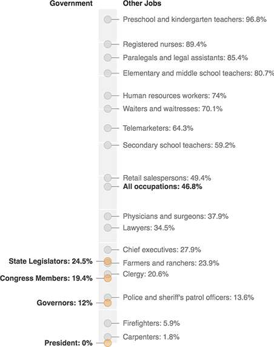

Women In Government: How They Compare To Other Jobs
Women make up about one in four state legislators and one in five Congress members. Here’s how that share stacks up to women’s representation in other jobs nationwide.
